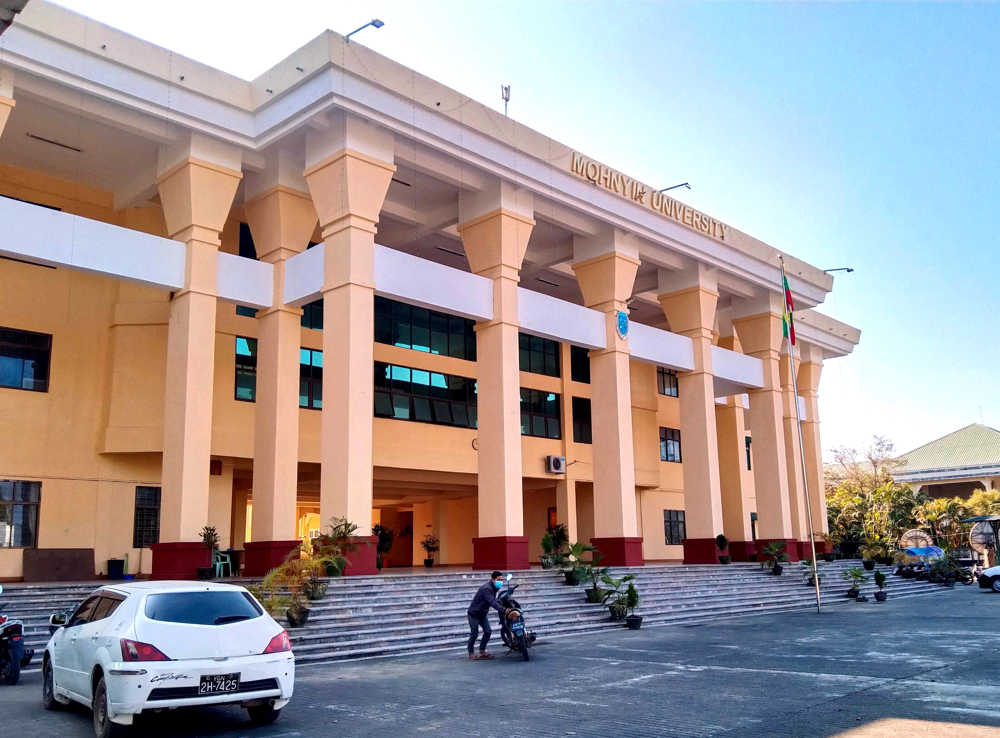

Offered Degrees (ဘွဲ့များ)
- Bachelor of Arts (B.A.) - ဝိဇ္ဇာဘွဲ့4 Years
- Bachelor of Science (B.Sc.) - သိပ္ပံဘွဲ့4 Years
- Bachelor of Law (LL.B.) - ဥပဒေဘွဲ့5 Years

University of Mohnyin is located in Mohnyin Township, Kachin State. Its page lists undergraduate programs in Arts, Science, and Law, with majors including Myanmar, English, Physics, Chemistry, Mathematics, Computer Science, and Law.
Official site:
mnuni.edu.mm